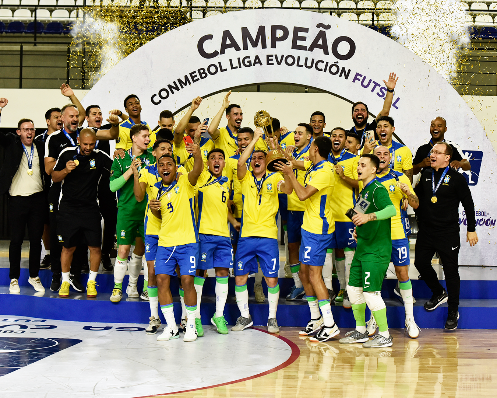

A Seleção Brasileira de Futsal, hexacampeã mundial, lidera o ranking mundial masculino e feminino. Sob o comando técnico de Marquinhos Xavier, a equipe se prepara para as competições de 2026, com foco na Copa América e no ciclo para a Copa do Mundo de 2028, mantendo a hegemonia com talentos no Brasil e no exterior.
O Brasil é o maior vencedor da história do futsal, conquistando a Copa do Mundo de Futsal da FIFA em 2024, no Uzbequistão, seu sexto título mundial (1989, 1992, 1996, 2008, 2012, 2024). A seleção também é dominante na América, com 12 títulos da Copa América de Futsal, sendo o mais recente em 2026.